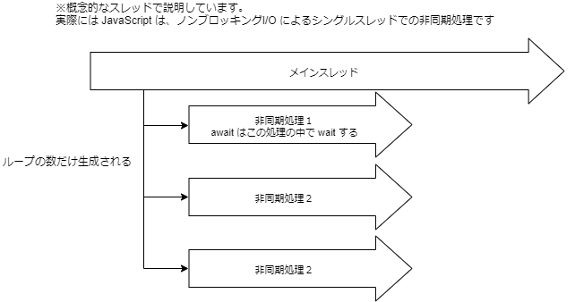

言語 - ES20xx / TypeScript
筆者: 海老原 賢次（kenji.ebihara@jrits.ricoh.co.jp）
作成日: 2021-08-18
更新履歴:
- 2021-08-18: 新規作成
- 2021-08-25: 配列に関する記述を追記した。(for await ~ of など)
- 2021-10-25: 記述漏れを追加、サンプルコードの間違い(array.filter)を修正した
概要
ここでは、JavaScript の言語規格である ECMAScript と TypeScript について書いています。
また、JavaScript は、ECMAScript のバージョンアップに合わせてその機能も追加されているので、最新の仕様についても述べます。
ECMAScript
JavaScript は、Webブラウザの黎明期に Netscape というブラウザに搭載されたのが始まります。
そのあとIEや他のブラウザでも採用され、Flash のスクリプトや Windowsのシェルとしても採用されました。
しかし、それぞれ独自の仕様が追加されたり、同じ名前のメソッドでも動作が異なるなど、かなり混乱した時代がありました。
そのため、ECMAScript としして標準の規格を作ることとなりました。ECMAScript は、規格の定義であり、いわば仕様書のようなものです。言語では有りません。
現在のブラウザでは、この ECMAScript の仕様に従って作成されており、ブラウザ間の差異はかなり少なくなりました。しかし、ECMAScript は毎年更新され、各ブラウザはそれに追いつこうとしていますが、ややばらつきがあります。特に新しいの仕様については注意が必要です。
ブラウザの対応状況は、下記のページで確認できます。
ECMAScript 2016+ compatibility table
ECMAScript のバージョンは、2015年以前は ES6 などの番号が、2015年移行は ES2020 など発行年が付きます。
Node.js は、ECMAScript に比較的早い段階で対応されるので、最新の仕様を試したい場合には良いと思います。
ECMAScript 2015 (ES6) とそれ以降のバージョン | Node.js
TypeScript
TypeScript は、マイクロソフトが開発している Alt JavaScript 言語 です。
JavaScript は、軽量なオブジェクト指向言語です。軽量なので、すぐに作って試す、ということができますが、規模が大きくなるとそれが欠点となり、安全性（バグの生みやすさ）やメンテナンス性が非常に低下します。
TypeScript は、Alterative JavaScript 言語と呼ばれるもので、大規模アプリでも適用できるようにしたものです。
JavaScript を扱う Webアプリは非常に人気があり、情報も豊富です。Google でも6番目の社内標準言語として位置づけられています。
Google社内の標準言語としてTypeScriptが承認される。ng-conf 2017 － Publickey
Google の社内標準言語の他は、C/C++、Java、JavaScript、Python、Go
TypeScript の仕様で書いたコードを、JavaScript にコンパイル（変換）して使用します。
ざっくりと、下記のような特徴があります。
-
TypeScriptではJavaScriptと同様の構文が使える
TypeScript は、ECMAScript の仕様に型定義などの独自仕様を追加したものになっています。ですので、JavaScript で書いたコードは、そのまま TypeScript にもなります。
このことで、開発者の学習コストは大きく有りません。
-
JavaScriptは動的型付け、TypeScriptは静的型付け
TypeScript は、厳密に型チェックされます。例えば、文字列を入れた変数に、数値を入れることはできません。（コンパイルエラーになります）
また、Null Safety にも書けるので、よくある null / undefined のエラーも低減できます。
型のチェックを無視してコンパイルしたり、any 型を使うことで型チェックを回避できたりするので、部分的に型チェックを入れる、ということもできます。
-
コンパイラを通すので、事前に構文チェックが行える
上に書いたような間違いは、JavaScriptでは実行時でないとわかりませんし、それだけではエラーにもならないので、原因の追跡が難しい場合が多いです。
TypeScript は、コンパイル時にそういったものをエラーとして検知するので、事前に判明できるので、安全なコーディングができます。
-
TypeScriptではインターフェースなど型定義の作成ができる
型定義として、JavaScript のビルドインのタイプだけでなく、Java や C# のようなインターフェースの定義ができます。
変数で、インターフェースが割り当てられると必須のプロパティが無かったり、プロパティの値の型が異なったりすると、エラーになります。
ES20xx を ES5（古いブラウザ対応）に変換（トランスパイル）したり、モジュールをバンドルする機能はないので、Webブラウザアプリの場合は webpack などで解決する必要があります。
厳密な型定義がされることで、バグを未然に防ぐことができるとともに、エディタの入力支援を受けやすくもなります。これの有無によって開発効率が大きく変わります。
演習
ECMAScript
ECMAScript で大きく変わった、ES2015以降の仕様について、確認していきましょう。
変数と定数
JavaScriptでは変数の宣言は、var でしたが、let, const が追加されました。
これにより、var の仕様は非推奨になっています。
let は、値を入れ替えることができる変数、const は入れ替えられない変数です。
意外かもしれませんが、殆どの場合 const で賄えます。基本的にはconstを使い、必要な場合に let を使う、のが推奨されています。ESLint でもそういったルールがデフォルトになっています。
勘違いしやすいのは、constで定義したオブジェクトのプロパティの値は変えられる、ということです。これは、オブジェクト自体は同じもの、だからです。ちなみに、内容が全く一緒だけど別に定義したオブジェクトは同一ではないので、代入できません。
| let l = "a";
l = "b"; // 👍 OK
const c = "a";
c = "b"; // ❌ エラー
const o = { name: "ebihara" };
o.name = "kenji"; // 👍 OK
o = { name: "kenji" }; // ❌ NG
|
arrow関数
関数は、function を使って定義しますが、下記のような書き方ができるようになりました。
| function hoge(a) {
console.log(a);
}
const hoge = (a) => {
console.log(a)
};
|
JavaScript では、Function はオブジェクトの扱いなので、変数のように関数の引数に指定できたりします。Arrow関数のほうがそのことが直感的にわかりやすいと思います。
この2つは ほぼ 同じですが、'this' の取り扱いが異なるので、注意です。
通常の function だと、呼び出し⽅によって 'this' の内容が異なります。
arrow 関数であれば、this は書いたところの 'this' に拘束されます。
arrow 関数のほうが、わかりやすいので function はできるだけ 使わない ほうが良いです。また、この書き方が様々なサンプルでも示されていますし、Reactでも普通に使われます。慣れておいたほうがいいでしょう。
しかし、オブジェクトのメソッド（後述するクラスも同様）に関しては、this の取り扱いは function でないと正しく有りません。
なので、function 形式が全くなくなる、というわけではないです。
1
2
3
4
5
6
7
8
9
10
11
12
13
14
15
16
17 | // 👍 正しい
const o = {
name: 'hoga',
setName(s) { this.name = s },
}
o.setName('fuga');
console.log(o.name); // -> 'fuga';
// ❌ NG
const o = {
name: 'hoga',
setName: (s) => { this.name = s },
}
o.setName('fuga');
console.log(o.name); // -> 'hoge';
// このときの this は、グローバルの this = window になります。
console.log(window.name); // -> 'fuga';
|
テンプレートリテラル
⽂字列リテラルとして、 '"ダブルクォーテーション"' と ''シングルクォーテーション'' が使われます。
これに加え、 'バッククォート' も⽂字列リテラルとして利⽤できるようになりましたが、これは、改行を含んだり、内部で変数を埋め込んで展開できるようになりました。
1
2
3
4
5
6
7
8
9
10
11
12
13
14
15 | let name = 'ebihara kenji';
let date = new Date();
console.log(`こんにちは! ${name} さん!`); // -> こんにちは! ebihara kenji さん!
console.log(`今は ${date.toString()} です。 `); // -> 今は Tue Jun 12 2018 12:58:17 GMT+0900 です。
// 改行もいける
console.log(`今は
${date.toString()}
です。 `);
// ↓
// 今は
// Wed Jun 13 2018 14:34:43 GMT+0900 (東京 (標準時))
// です。
// エスケープしないで出力する
console.log(String.raw`改行は\nでできます`);
// 改行は\nで返されます。
|
最後の記述は、 タグ付きテンプレート と⾔われるものです。String.raw は関数です。
ここでは詳細は説明しませんが、ライブラリではこの呼び方をすることも有るので、こういう書き方も有る、と覚えておいてください。
テンプレートリテラル (テンプレート文字列) - JavaScript | MDN
デフォルト引数
関数の引数の宣⾔で、引数が指定されないときのデフォルト値を指定できるようになりました。
| const hello = (name, keisho='さん') => {
console.log(`ようこそ ${name} ${keisho}`);
}
hello('kenji'); // -> ようこそ kenji さん
|
可変⻑引数
関数の引数で、可変の数の引数を宣⾔できるようになりました。ただし、他の引数の最後に指定する必要があります。
| const hello = (name, ...keisho) => {
keisho.forEach(a => {
console.log(`ようこそ ${name} ${a}`);
});
}
hello('kenji', 'さん', 'さま', 'くん');
// ようこそ kenji さん
// ようこそ kenji さま
// ようこそ kenji くん
|
オブジェクトの分割代⼊
オブジェクト内のプロパティをそのプロパティと同じ名前のローカル変数で参照する場合、簡単に書くことができます。また、プロパティが undefined の場合の初期値も定義できます。
| const user = {
name: 'kenji ebihara',
age: 29,
address: 'yoshino-cho kagosima-ken',
};
const {name, age=-1, gender="unknown"} = user;
console.log(name); // -> kenji ebihara
console.log(age); // -> 29
console.log(gender); // -> unknown
|
配列でも同様に受け取ることができます。
| const [first, second] = ['a', 'b', 'c']
console.log(`${first}, ${second}`); // "a, b"
|
スプレッド構文（オブジェクトの展開）
オブジェクト内のプロパティを、"..."で同じ名前の変数にすべて展開できます。
展開した内容は1階層コピー（いわゆるシャローコピー）で、オブジェクトが含まれる場合、そのオブジェクトはコピー元と同じものが参照さるので、注意が必要です。
1
2
3
4
5
6
7
8
9
10
11
12
13
14
15
16
17
18 | const user = {
name: 'kenji ebihara',
age: 29,
address: 'yoshino-cho kagosima-ken',
};
const assignUser = {
...user,
assignData: new Date(),
}
console.log(assignUser);
/*
{
"name": "kenji ebihara",
"age": 29,
"address": "yoshino-cho kagosima-ken",
"assignData": "2018-06-12T04:39:46.354Z"
}
*/
|
配列でも同様のことができます。配列のマージや同じ値を持つ別の配列を作成するときなどに便利です。
| const abc = ['a', 'b', 'c'];
const a123 = ['1', '2', '3', ...abc];
console.log(a123); // -> [ "1", "2", "3", "a", "b", "c" ]
|
クラス定義
function でコンストラクタ関数として書くことにより、クラスっぽい事はできました。
しかし、特別な宣⾔もなく通常の関数との違いがわからないことから、誤って通常関数のように使ってしま
うと、エラーになるならまだしも、場合によってはエラーにもならず変な動作をしてしまうこともあり得
ます。
class ステートメントが追加されたことで、これを利⽤するようにしましょう。
ただしJavaやC#異なり、プロパティはコンストラクタの中で定義します。
1
2
3
4
5
6
7
8
9
10
11
12
13
14
15
16
17
18
19 | class Polygon {
// height = 0 // こんな事はできない
// コンストラクタ
constructor(height, width) {
this.height = height;
this.width = width;
}
// getter
get area() {
return this.#calcArea();
}
// private メンバには '#' を付ける
#calcArea() {
return this.height * this.width;
}
}
let square = new Polygon(10, 10);
console.log(square.area);
// 100
|
オプショナル・チェイニング演算子
オブジェクトのプロパティを参照したい場合、オブジェクト自身が null / undefined の判断をすることは多いかと思います。
そのプロパティがオブジェクトで、null / undefined の可能性がある場合、さらにその判断をすることになりますが、if が冗長的になります。
| let name = '';
if (session) {
if (session.user) {
name = obj.user.name;
}
}
|
オプショナル・チェイニング演算子を使用すると、完結に書くことができます。
| const name = obj?.user?.name; // obj か、obj.user が null/undefined の場合、undefined を返します。
|
Promise / async / await
Promise は非同期処理関数で使用されるオブジェクトです。
Promise 以前は、非同期処理が完了したときの関数（コールバック関数）を引数で渡していました。
ある非同期関数の後に別の非同期関数を実行する、ということも少なくなく、このような場合コールバック関数が入れ子になってしまい、コードの見通しが非常に悪くなります。俗にコールバック関数地獄、と言われています。
| asyncFn1((data1) => {
asyncFn2((data2) => {
asyncFn3((data3) => {
asyncFn4((data4) => {
//処理
});
});
});
});
|
非同期関数が、Promise オブジェクトを返すように改善すると、下記のようにメソッド・チェーンの形で書くことができます。
| asyncFn1()
.then((data1) => { return asyncFn2(); })
.then((data2) => { return asyncFn3(); })
.then((data3) => { return asyncFn4(); })
.then((data4) => { /* 処理 */ })
.catch((e) => {
/* 上のいずれかで例外が発生した場合に、catch が処理される */
});
|
Promise を返す非同期関数を作成するには、new Promise としてPromiseオブジェクトを作成します。引数に処理の関数を定義します。成功時には resolve（関数の第1引数）、失敗時に reject（関数の第2に引数） を実行します。
| const asyncFn1 = () => {
return new Promise((resolve, reject) => {
let result = true;
// 何かしらの処理
if (result) { // result は何かしらの処理の結果が入っていることと仮定する
resolve(result); // 引数に与えたオブジェクトを非同期関数の戻り値となる
} else {
reject(new Error('エラーが発生しました')); // reject が呼ばれると、呼び元の catch が処理される。
}
})
};
|
async / await は、メソッドチェーンの形ではない、非同期処理関数を実行する書き方です。
1
2
3
4
5
6
7
8
9
10
11
12
13 | // await を使用するには、その関数が async 宣言されている必要がある。
// async 宣言した関数は、自動的に Promise を返す非同期関数となる。
const fn = async () => {
try { // 非同期処理の例外(reject)は、try ~ catch で処理できる
const result = await asyncFn1(); // resolve で渡された値が result に入る
// await があると asyncFn1 が終了するまで、次の処理に進まない。
// asyncFn1 完了後の処理
// ...
return obj; // return した値が、非同期関数の戻り値となる。Promise での resolve と同じ
} catch (e) {
throw e;
}
};
|
配列のメソッドの拡張
配列（Array) を順次に処理する場合、for を使うことが多いでしょう。ES2015 以降では、配列のメソッドが拡張され、関数で順次処理を書くことができるようになっています。
ここではその一部を紹介します。
1
2
3
4
5
6
7
8
9
10
11
12
13
14
15
16
17
18
19
20
21
22
23
24
25
26
27
28
29
30
31
32
33
34
35
36
37
38
39
40
41
42
43
44
45
46
47
48
49
50
51
52 | const users = [
{ age: 10, name: 'taro'},
{ age: 20, name: 'jiro'},
{ age: 30, name: 'hanako'},
];
// age が20以上のオブジェクトを抜き出す
const over20 = users.filter((user) => user.age >= 20); // (user) => { return user >= 20 } と同じ意味です
console.log(over20); // [ { age: 20, name: 'jiro'}, { age: 30, name: 'hanako'} ]
// 条件にあったものを１つ抽出する
const taroUser = users.find((user) => user.name === 'taro');
console.log(taroUser); // { age: 10, name: 'taro'}
// 配列内に条件に合うものが含まれるかどうか
const exist = users.includes((user) => user.name === 'saburo');
console.log(exist); // false
// 配列から、別の配列を生成する。
const displayList = users.map((user) => `名前:${user.name} / 年齢:${user.age}`);
console.log(displayList); // ["名前:taro / 年齢:10", "名前:jiro / 年齢:20", "名前:hanako / 年齢:30"]
// 配列の値を蓄積して、単一の戻り値を返す
const nameChain = users.reduce((accumulator, user) => `${accumulator} / [${user.name}]`, ''/*初期値*/);
console.log(nameChain); // "/ [taro] / [jiro] / [hanako]"
// インデックスを使って配列の一部を抜き出す（元の配列に変化はない）
const a2 = users.slice(1, 2); // インデックス 1 から インデックス 2 までを取り出す
console.log(a2); // [{ age: 20, name: "jiro" }, { age: 30, name: "hanako" }]
const last = users.slice(-1); // 最後の1つ目 から 1つ取り出す = 配列の最後の項目だけ取り出す
console.log(last); // [{ age: 30, name: "hanako" }]
// 配列を順次処理する
users.forEach((user) => {
// user を使った処理
console.log(user);
})
// 以下は破壊的メソッド
// 配列の指定したインデックスに要素を追加する
users.splice(1, 0, { age: 40, name: 'saburo'});
console.log(user); // [{"age":10,"name":"taro"},{"age":40,"name":"saburo"},{"age":20,"name":"jiro"},{"age":30,"name":"hanako"}]
// 配列から指定したインデックスを削除する
users.splice(2, 1);
console.log(user); // [{"age":10,"name":"taro"},{"age":40,"name":"saburo"}, {"age":30,"name":"hanako"}]
|
for ~ of
配列を巡回させるときに、for ~ in を使用していませんか？これは、思わぬ動作の不具合を招きます。
for ~ in は、配列をループさせるのではなく、オブジェクトが持っているプロパティ を巡回させるものです。
配列におけるインデックスも、プロパティ扱いなので配列で使えなくはないですが、間違ってオブジェクトを渡してしまってもエラーにならず、意図しない動きになります。
また、JavaScript は型に対してゆるい仕様です。配列のオブジェクトに任意の名前のプロパティも付けることが可能ですが、それも巡回の
確実に配列を巡回させるには、for ~ of を使うべきです。
| const array = ['a', 'b', 'c'];
array.name = '';
for (v in array) { console.log(v) } // 0, 1, 2, name
for (v of array) { console.log(v) } // a, b, c
|
ただし、webpack でコンパイルする場合、for ~ of は新しい記法なのでこれと同じ動きをするようなコードに変換されますが、サイズがかなり大きくなるようです。
よって、forEach を使うことをが推奨されます。
配列の順次処理での非同期処理
配列を順次処理する中で、非同期の処理を呼ぶ場合注意が必要です。
for ~ of や、forEach など Array のメソッドの場合、下記のようにしても1つ1つの非同期処理の完了を待たずに次の配列に移ります。
| const array = ['a', 'b', 'c'];
array.forEach(async (item) => {
await asyncFn(item); // この完了を待たずに配列の次の値の処理に進む
});
|
上と同じ。こちらであれば、非同期処理の完了を待たずに次の配列の処理に進むことが判りやすいですね。
| const array = ['a', 'b', 'c'];
array.forEach((item) => {
// Promise オブジェクトを返して関数はすぐに終わる。
// Promise の中の関数は、非同期で実行される
new Promise((resolve) => {
asyncFn(item).then(() => resolve());
}
});
|
これは、関数の中では待つのですが、その外側には Promise オブジェクトを返して処理が続行してしまうからです。

配列の順次処理の中に非同期処理を実行する場合は、次のいずれかの戦略を考えます。
-
1つづつ非同期処理の終了待って進む、シーケンシャルに処理する方法。
-
配列の数だけパラレル（並列）に処理して、すべての完了を待つ方法。
-
パラレルに処理する上限を設けて、その上限ごとに処理する方法。
これらは配列の数が問題になります。非同期処理が時間のかかる処理の場合は、シリアルに処理するとパフォーマンスに影響有るでしょう。
配列の数が多い場合は、パラレルに処理するとマシンのメモリなどスペックの問題があるかもしれません。
場合によって方法を選択する必要があります。
| const array = ['a', 'b', 'c'];
for (item of array) {
await asyncFn(item); // この完了を待って配列の次の値の処理に進む
});
|
シーケンシャルに処理する場合、for ~ of を使うことの他に、for await ~ of が使用できます。
パラレルに処理する場合は、Promise.all が使えます。
| const array = ['a', 'b', 'c'];
await Promise.all(array.map(item => { // すべてのPromiseが完了するまで待機する
return asyncFn(item); // map で、Promise オブジェクトの配列を返す
}));
|
末尾のカンマ
オブジェクトリテラルや配列リテラル、関数の引数で、最後の項⽬の後にカンマが付けられます。
後に要素を⾜したり、順番を⼊れ替えたりするときに、カンマを付けたり取ったりする⼿間が省かれるでなるべくつけておくのが良いと思います。
eslint などでは必須のルールとすることができます。
| let obj = {
name: 'ebihara',
age: 29, // OK
};
let arr = [ 1, 2, 3, ]; // これもOK
let fn = (a, b, c,) { /* ... */ } // 仕様上はOKだが、対応ブラウザが限られる
|
ショートハンド
JavaScriptでは、省略形などによって、より短いコードで書くことができます。これらのテクニックも知っておくと効率良いコーディングができるでしょう。
3項演算子
| const state = 'processing';
// if を使う場合
let stateString1 = '';
if (state === 'complete') {
stateString1 = '完了';
} else {
stateString1 = '未完了';
}
// 3項演算子を使う場合
const stateString2 = (state === 'complete') ? '完了' : '未完了';
|
短絡演算子(||, &&)
1
2
3
4
5
6
7
8
9
10
11
12
13
14
15
16
17
18
19
20 | const name = '';
// || の例
// if を使う場合
let nameString1 = '';
if (name === null || name === undefined || name === '') {
nameString1 = '(空)';
}
// || を使う場合
const nameString2 = name || '(空)';
// && の例
const age = null;
// if を使う場合
if (age !== null && name === null && name === undefined && name === '') {
console.log('成功');
} else {
console.log('失敗');
}
// && を使う場合
console.log(age && name && '成功' || '失敗');
|
オブジェクト・リテラルでプロパティ名と変数名が同じ場合
| const name = 'ebihara';
const age = 47;
const user = {
name, // name: name と同じ
age, // age: age と同じ
};
|
関数の戻り値
| const fn1 = () => ({ name: 'ebihara' });
const fn2 = (date) => date.toISOString();
// 以下と同じ
const fn1 = () => {
return { name: 'ebihara' };
};
const fn2 = (date) => {
return date.toISOString();
}
|
カリー化と部分適用
| const fn = (name, aisatsu) => `${name} さん、 ${aisatsu}。`;
const fn1 = (aisatsu) => (name) => fn(name, aisatsu); // カリー化
const fn2 = fn1('こんにちは'); // 部分適用
fn2('海老原'); // "海老原さん、こんにちは。"
|
上をわかりやすく分解してみる
| const fn = (name, aisatsu) => {
return `${name} さん、 ${aisatsu}。`;
};
const fn1 = (aisatsu) => {
const f = (name) => fn(name, aisatsu); // -(1)
return f; // 関数を返す関数
};
const fn2 = fn1('こんにちは'); // fn2 には、(1) の関数が入る
fn2('海老原'); // "海老原さん、こんにちは。"
|
TypeScript
TypeScript は、最新の ECMAScript の対応を積極的に行っているので、上で挙げた ECMAScript の仕様はそのまま使えます。
これに加えて、型定義に関する様々な仕様が追加されています。
変数の型指定
let や const の変数に型を指定できます。型違反の代入は、コンパイル時にエラーになります。
| let num: number = 0;
const str: string = "aa";
str = 0; // エラー
|
関数の引数や戻り値にも型を指定できます。
| const fn = (num: number): string => {
return `num:${num}`; OK // string でない return だとエラー
};
const result = fn("0"); // 引数の型が違うためエラー
console.log(result.length); // result は文字列であることが確定しているため、安心して .length が使える
|
Union型
JavaScript では、変数に文字が入ったり数値が入ったり、といったように複数の型を取ることがあります。
そのような場合は、Union 型が利用できます。
プロパティは共通のものがあればそのまま利用できますが、
| const getYear = (date: Date | number) => {
console.log(date.toString()); // toString は Date, number どちらも持っているのでキャストが必要ない
// console.log(date.getFullYear()); // number に getYear がないのでエラー 型チェックかキャストが必要
if (typeof date === "number") {
const d = new Date();
d.setTime(date); // 型チェックにより、date は number に確定している
return d.getFullYear()
} else {
return date.getFullYear(); // 型チェックにより、date は、Date に確定している
}
}
|
null と undefined は明確に区別され、null も型として扱う
型を指定した変数は、null, undefined も入れることができません。
入れる場合は、Union型として定義します。
| let name: string = null; // NG
let name2: string | null = null; // OK
|
文字列リテラル型
ある変数は文字列だけど入る文字列の種類は決まっている、という場合が多いです。
例えば、ステータスを表す情報として、'create','processing','complete' と決まっているという場合などです。
これは、文字列リテラル型の Union型 として定義できます。
| let status: 'create' | 'processing' | 'complete' = 'create';
status = 'procesing'; // エラー タイプミスを防ぐことができる
|
文字列だけでなく、数値もいけます。
| let status: 0 | 1 | 2 = 0;
status = 3; // エラー
|
オブジェクト型
Java や C# のように、オブジェクトの型（interface）を定義できます。
interface 構文と、type 構文があります。
1
2
3
4
5
6
7
8
9
10
11
12
13
14
15
16
17
18
19 | interface User {
name: string;
age: number;
}
type UserType = {
name: string;
age: number;
};
const user: User = {
// 宣言しているプロパティがなかったり、宣言にないプロパティがあるとエラー
name: 'ebihara',
age: "47", // 型違反によりエラー
address: "", // オブエクト型にないプロパティなのでエラー
};
// type で宣言した方も同様に使える
const tUser: UserType = {
name: 'ebihara',
age: 47,
};
|
interface と type の違いですが、できることはほとんど同じです。interface は、extends で拡張できるアドバンテージがありましたが、type でも型のマージをすることで拡張と同じようなことができるようになりました。
1
2
3
4
5
6
7
8
9
10
11
12
13
14
15
16
17
18
19
20
21
22
23
24
25
26
27
28 | interface User {
name: string;
age: number;
}
type UserType = {
name: string;
age: number;
};
interface ExUser extends User { // User を拡張
address?: string;
}
type ExUserType = UserType & { // 型をマージ
address?: string; // ? をつけると、値が定義されない = undefined の場合がありうることを示す
};
const user: ExUser = {
name: 'ebihara',
age: 47,
address: "kagoshima",
};
// type で宣言した方も同様に使える
const tUser: ExUserType = {
name: 'ebihara',
age: 47,
address: "kagoshima",
};
|
override について、interface は 親のプロパティの型を変更できないなど厳密ですが、type の方が単純な上書きなのでルーズな拡張になります。
また、type では Union型 や 後述する、関数型 も定義できます。
| type date = Date | string;
type FnType = (date: Date | number) => string;
|
Java のように厳密に管理したい場合は、interface が良いですが、最近では扱いが楽な type を好む人が多いようです。
筆者も、Java と似たような管理ができる interface を使用していましたが、最近では type を多用するようになりました。
interfaceとtypeの違い、そして何を使うべきかについて
関数型
関数自体も型定義できます。関数の型とは、引数の数とそれぞれの型と関数の戻り値です。
コールバック関数を持つ汎用的な関数を作成するときなどに便利です。
| type CallBackFnType = (date: Date | number) => string;
const fn: FnType = (date) => { // 引数の指定をしなくても型定義により指定されているので必要ない
return date.toString(); // string をreturn しないと エラーとなる。
};
|
型推論
型指定しなくても、変数の宣言時に代入した型から、変数の型を自動的に判別します。
オブジェクトリテラルについても、プロパティとそれぞれの型が自動判別されます。
| let n = 0;
n = "1"; // エラー n は数値型になっている
const user = { name: 'ebiahra', age: 47 };
user.name = 1; // エラー name は文字列のため
user.address = ""; // エラー address プロパティはないため
|
文字列インデクサ
v["key"] のようにしてメンバにアクセスできる型を宣⾔できる。JavaのMap型のようなもの。
| const status: {[code: string]: string} = {
'00': '初期',
'10': '申請中',
'20': '承認済',
};
status['30'] = '廃棄';
console.log(status['00']); // -> "初期"
|
クラス
ES20xx で説明したクラスが、TypeScript でも使えますが、より使いやすくなっています。
1
2
3
4
5
6
7
8
9
10
11
12
13
14
15
16
17
18 | class User {
// constructor 外での初期化が可能
familyName = '';
givenName = '';
age: number | null = null;
gender: 'male' | 'female' | null = null;
constructor() {
// 初期化処理
}
public getDisplayName () {
return `${this.familyName} ${this.givenName}`;
}
private lastAccessDate: Date | null = null; // 外からアクセスできない
public setLastAccessDate(date: Date) { // 明示的に公開
this.lastAccessDate = date;
}
public readonly authority: string = "admin"; // 読み取り専用で公開
}
|
ジェネリック型
ジェネリック型は、クラスやオブジェクト、関数に外部から型を与えられる事ができる機能です。
Java や C# などでも同様の機能があります。
この機能は、汎用的なユーティリティなどを作るときに便利です。
例えばこのコードは、リングバッファを実現するクラスですが、バッファとして管理する値は、使う側が決めるようにするものです。
1
2
3
4
5
6
7
8
9
10
11
12
13
14
15
16
17
18
19
20
21
22
23
24
25
26
27
28
29
30
31 | class RingBuffer<T> {
private buffer: T[] = [];
private bufferSize = 100;
public currentIndex = -1;
public constructor(){
this.buffer = Array(100);
}
public push(value: T) { // 配列に追加する T のオブジェクトを渡す
// カレントが終端の場合は、先頭に戻る
this.currentIndex++;
if (this.currentIndex > this.bufferSize) {
this.currentIndex = 0;
}
this.buffer[this.currentIndex] = value;
}
public getCurrent() {
return this.buffer[this.currentIndex]; // T オブジェクトが返る
}
}
type UserType = {
name: string;
age: number;
};
const ringBuffer = new RingBuffer<UserType>();
ringBuffer.push({
age: "20", // エラー ジェネリック型に指定した型とことなる
name: 'taro',
});
|
タプル型
通常配列は、その中の値は単一の型のオブジェクトであることが望ましいです。
ただ、例えば関数の戻り値で、複数の値を返したい場合、オブジェクトでも良いのですが、数が少ない場合、配列として1番目に文字列、2番めに数値 など決まった数と順番で返すようにすると、便利です。
そのように、配列の数と順番が決まっている場合、それを型として定義できます。それをタプル型といいます。
| const createLog = (message: string): [Date, string] => {
return [new Date(), `S:${message}`]
};
const [date, message] = createLog('test');
console.log(date.toISOString); // -> ISO8601 形式日付
console.log(message); // -> "S:test"
|
Utility Types
これは純粋な型ではなく、定義されている型を元に、変更した別の型を生成するものです。
【TypeScript】Utility Typesをまとめて理解する - Qiita
Omit や Partial がよく使われます。
Omit は指定したプロパティを削除します。Partial は全てのプロパティをOptional（undefined の可能性がある = なくても良い）にします。
| type UserType = {
name: string;
age: number;
};
type AgeOnly = Omit<UserType, 'name'>; // { age: number } だけの型となる
type PartialUser = Partial<UserType>; // { name?: string, age?: string } となります
|
まとめ
JavaScriptでは、IEでも動作する、ES5 と呼ばれていたバージョンから、大きく仕様が追加されより短いコードで書けるようになり、コードの見通しも良くなります。
それぞれの仕様を正しく把握して、積極的に使っていきましょう。